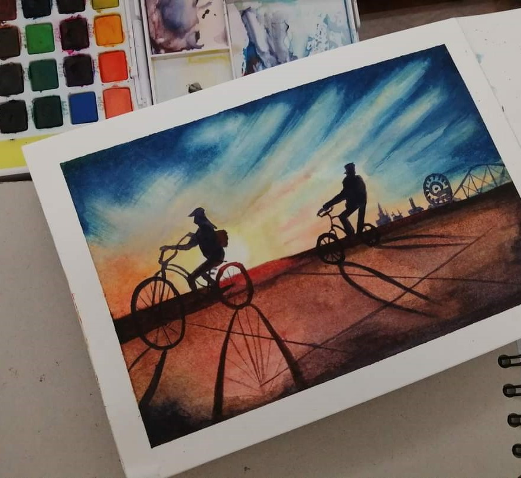
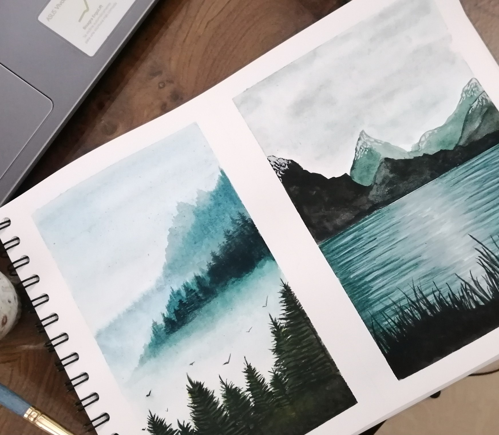
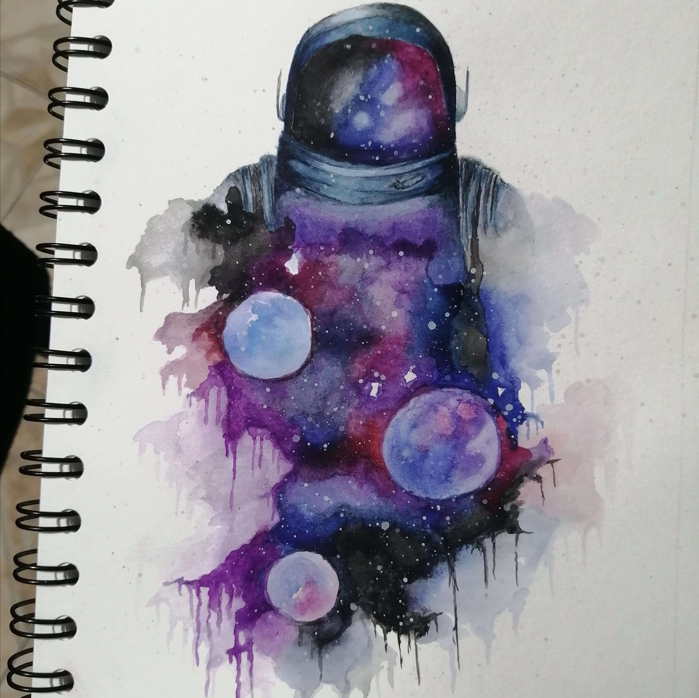
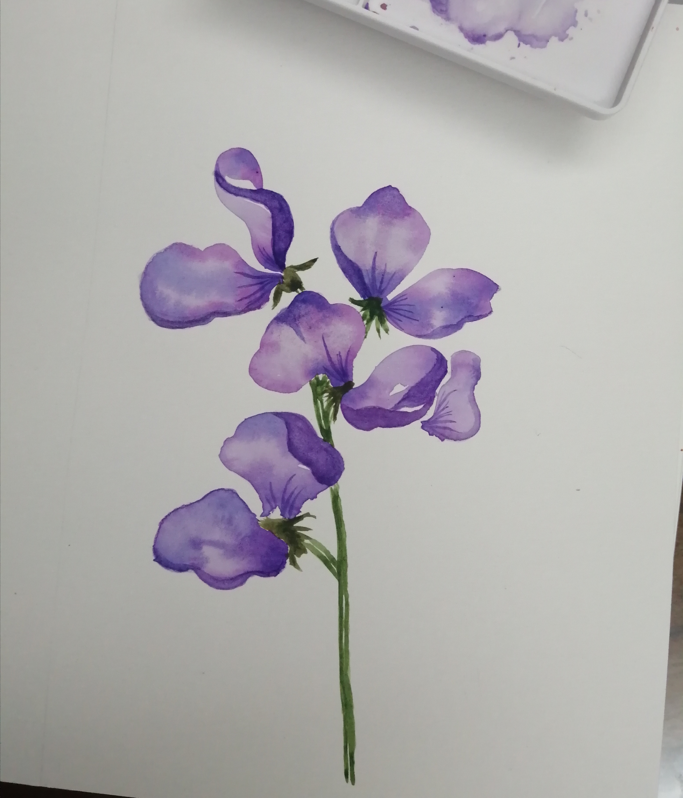
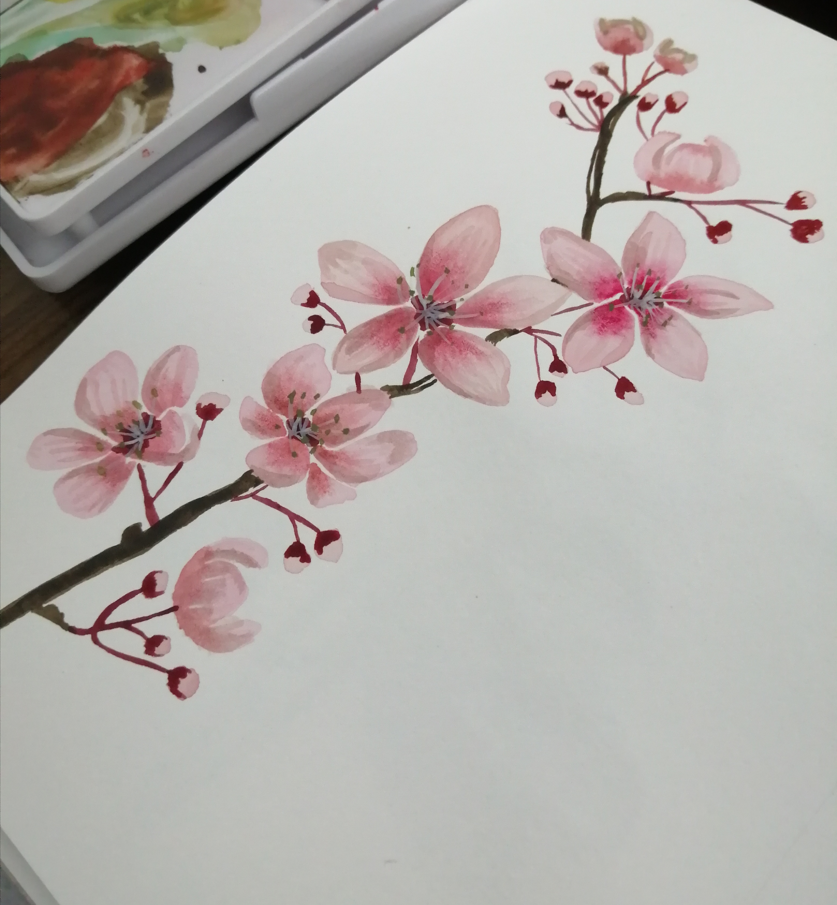
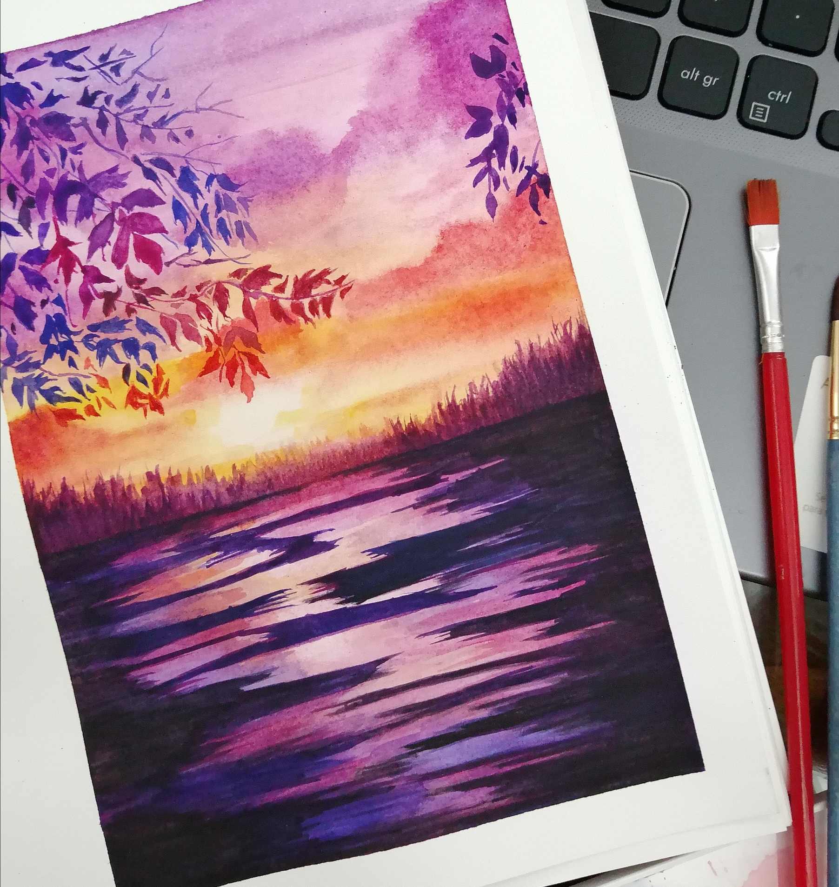

Hobbies, espacios de felicidad.

1. Te relajan y a la vez te puede convertir en un ser más creativo.
Suelen ser importantes tanto para la salud física como emocional porque es lo que logra alejar tu mente un momento de las preocupaciones y del estrés de la rutina de cada día.
2. Escogemos aquello que refleja nuestras motivaciones y talentos.
Por este motivo, es fundamental procurar sacar tiempo para realizarnos y alimentar esas pasiones. Todos tenemos talentos escondidos, que solo basta con encontrarlos y sacarlos a la luz.
3. Los momentos de ocio son igual de importantes que los del trabajo diario.
Muchas personas dicen no realizar hobbies porque no tienen el tiempo para dedicarles. Pues no es así, si organizas tu agenda encontrarás el espacio para practicar lo que más te guste.
Galería
Acuarela: Uno de mis mayores hobbies
Clic en las fotos y observa mejor







Algunos otros
Haz clic y conoce más

Aprender idiomas

Música